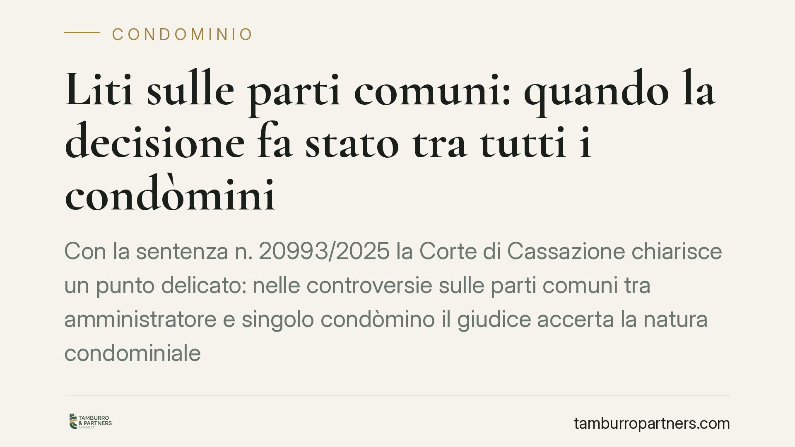

Liti sulle parti comuni: quando la decisione fa stato tra tutti i condòmini
Con la sentenza n. 20993/2025 la Corte di Cassazione chiarisce un punto delicato: nelle controversie sulle parti comuni tra amministratore e singolo condòmino il giudice accerta la natura condominiale del bene solo in via incidentale. Per un giudicato definitivo sulla titolarità occorre coinvolgere tutti i condòmini. Una distinzione che incide sull'efficacia pratica della decisione.

Il fatto e la questione
La Cassazione è tornata su un tema ricorrente nel contenzioso condominiale: quando una lite riguarda una parte comune (il cortile, il sottotetto, un muro, un'area di passaggio), chi deve essere parte del giudizio perché la decisione valga davvero per tutti?
Il caso tipico vede l'amministratore agire o resistere in giudizio contro un singolo condòmino per questioni relative a un bene che si assume comune. La domanda è se la sentenza che ne deriva accerti in modo stabile la titolarità del bene, oppure si limiti a risolvere la singola controversia.
La risposta della Corte è netta: dipende da come è stata impostata la causa.
Inquadramento normativo
Il punto di partenza è l'art. 1117 del Codice civile, che elenca le parti comuni dell'edificio salvo titolo contrario. A questo si affianca l'art. 1131 c.c., che attribuisce all'amministratore la rappresentanza del condominio nei limiti delle proprie attribuzioni, comprese le azioni a difesa delle parti comuni.
La sentenza n. 20993/2025 precisa che, nelle liti promosse dall'amministratore contro un singolo condòmino, il giudice può accertare la condominialità del bene solo in via incidentale. In termini pratici: valuta la natura del bene come presupposto per decidere la controversia specifica, ma senza che tale valutazione produca un accertamento definitivo (un "giudicato") sulla proprietà.
Perché la decisione sulla titolarità del bene faccia stato — cioè diventi vincolante e non più discutibile — servono due condizioni. La prima è il litisconsorzio necessario: devono essere parti del giudizio tutti i condòmini, non il solo amministratore in rappresentanza del condominio. La seconda è un'apposita istanza ex art. 34 c.p.c., la norma che consente di trasformare una questione pregiudiziale in oggetto autonomo di decisione con efficacia di giudicato.
Perché la distinzione conta
La differenza non è teorica. Una sentenza che accerta la condominialità solo in via incidentale risolve la lite del momento, ma non impedisce che la stessa questione venga riaperta in un futuro giudizio, magari da un altro condòmino o dallo stesso proprietario in una causa diversa.
Chi ha ottenuto una decisione favorevole potrebbe quindi trovarsi, anni dopo, a dover ridiscutere la natura del bene. L'accertamento incidentale non "blinda" la proprietà.
Per ottenere stabilità occorre strutturare correttamente la causa fin dall'inizio: coinvolgere tutti i contitolari e chiedere espressamente al giudice una pronuncia con efficacia di giudicato sulla titolarità. È una scelta processuale, non un automatismo.
Implicazioni pratiche
Per l'amministratore: l'azione ex art. 1131 c.c. è idonea a tutelare le parti comuni nel singolo caso, ma non basta a definire in modo stabile la proprietà. Se l'obiettivo è un accertamento definitivo, l'amministratore da solo non è sufficiente.
Per il singolo condòmino o il proprietario: una sentenza sfavorevole resa in via incidentale lascia margini di contestazione futura. Allo stesso modo, chi vuole una pronuncia certa sulla natura del bene deve attivarsi perché la causa coinvolga tutti.
Per l'assemblea: la decisione di promuovere un giudizio volto a definire stabilmente la proprietà di una parte comune va ponderata con attenzione, perché richiede la partecipazione di tutti i condòmini e scelte processuali specifiche.
Cosa fare in concreto
- Chiarite l'obiettivo prima di agire: valutate se vi serve risolvere una singola lite o ottenere un accertamento definitivo sulla proprietà del bene comune. Le due strade hanno impostazioni processuali diverse.
- Verificate il contraddittorio: se puntate a un giudicato sulla titolarità, assicuratevi che tutti i condòmini siano parti del giudizio, come impone il litisconsorzio necessario.
- Formulate l'istanza ex art. 34 c.p.c. in modo esplicito, quando volete che la questione sulla proprietà venga decisa con efficacia di giudicato e non solo in via incidentale.
- Controllate i titoli di provenienza: l'art. 1117 c.c. opera salvo titolo contrario. Un esame preventivo di atti e regolamento evita sorprese sulla natura del bene.
- Coinvolgete l'assemblea quando l'iniziativa supera le ordinarie attribuzioni dell'amministratore, così da legittimare correttamente l'azione.
La pronuncia conferma che, nel contenzioso condominiale, l'esito dipende tanto dal merito quanto dall'architettura processuale della causa. Una domanda mal impostata può produrre una vittoria solo apparente.
---
*Contributo informativo a cura di Tamburro & Partners - Avv. Giuseppe Tamburro. Non costituisce parere legale.*
Ogni condominio ha una storia a sé.
Se gestisci un'amministrazione e vuoi un confronto su una specifica questione condominiale, scrivi allo studio. Ti rispondiamo entro un giorno lavorativo.